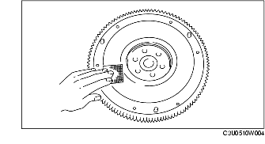

INSPECTION DE VOLANT-MOTEUR
B3E051011500W02
1. Déposer le volant-moteur.
-
Remarque
-
• Légères rayures normales et décoloration lors de l'utilisation de papier de verre.

-
• Inspecter le voilage de la surface de contact du disque d'embrayage avec le volant-moteur monté sur le vilebrequin.
2. Détecter la présence de rayures, entailles, décoloration au niveau de la surface de contact du disque d'embrayage.
3. Détecter la présence de détériorations et usures au niveau des dents de la couronne dentée.
4. Reposer le volant-moteur.
5. Mesurer le voilage de la surface de contact avec le disque d'embrayage à l'aide d'un comparateur à cadran.
-
Voilage maximum
-
0,1 mm {0,004 in}
-
• Si la valeur mesurée dépasse la valeur maximum autorisée, remplacer le volant-moteur.